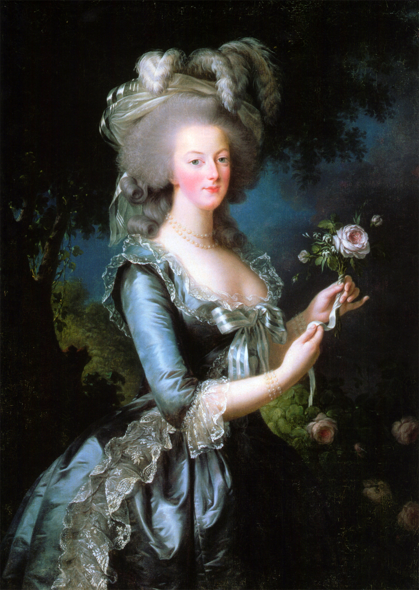
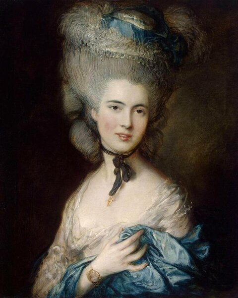
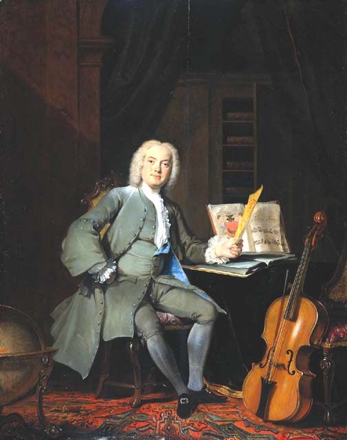

В XVIII веке, вплоть до 1790-х годов, женщины высших сословий носили платья с пышными юбками на фижмах. Существовали два основных типа платья — закрытое и распашное. Закрытое платье было попроще, надевалось на нижнее белье. Распашное платье было более нарядным; под него надевалась отдельная юбка. Эта юбка могла быть того же цвета, что и все остальные элементы, или более светлого, или контрастного по отношению к платью. Также часто она содержала декоративные элементы. В область лифа вставлялась специальная V-образная подкладка под названием стомак. Он щедро украшался вышивкой, жемчугом и драгоценными камнями.

Также в первой половине XVIII века в моду вошла бархотка (бархатная черная ленточка), которую женщины носили на шее, дабы оттенить белизну лица.

Мужской костюм в XVII веке претерпел изменения. Неотъемлемой частью костюма светского мужчины являлась белая рубашка с кружевными манжетами и отложным воротником, который тоже был кружевным. Простой народ носил одежду без кружев.
На рубашку надевали камзол, полы которого спереди были удлиненными, а сзади – укороченными, и застегивали только на груди. Узкие панталоны по длине доставали до икр и застегивались на пуговицу или завязывались лентами. Чулки, которые надевали под панталоны, тоже были показателем статуса мужчины: знатные люди носили светлые изделия, а рабочий класс — полосатые.
Кафтан с укороченными рукавами служил верхней одеждой. Его набрасывали на левое плечо и спину, как плащ.

Шпага, обязательный элемент дворянского костюма, крепилась с левой стороны, на перевязи, с помощью парчи или ремешка. Также немаловажными аксессуарами были трость и перчатки. К концу XVII века сложились три важных компонента мужского костюма – сюртук, жилет и брюки.